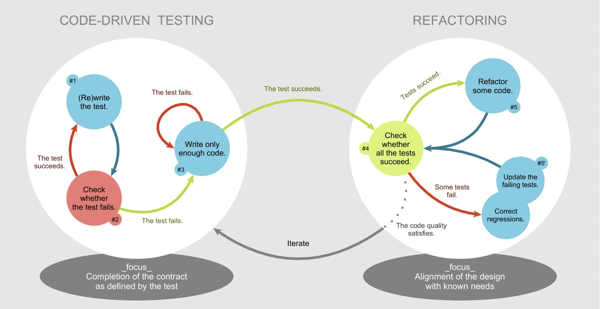

Mis on Test-Driven Development?
Test-Driven Development (TDD) on tarkvaraarendusprotsess, mille keskmes on testide kirjutamine enne koodi. TDD lähenemine tagab, et iga tarkvarakomponent täidab oma määratud ülesannet, samas aidates vältida regressioonivigu.
Protsess koosneb kolmest peamisest sammust:
- Testi kirjutamine: Kirjutatakse test, mis määratleb soovitud käitumise, kuid alguses ebaõnnestub, kuna vastav kood pole veel kirjutatud.
- Koodi kirjutamine: Kirjutatakse minimaalne kood, mis on vajalik testi läbimiseks.
- Refaktoreerimine: Puhastatakse ja optimeeritakse koodi ilma funktsionaalsust muutmata.
Arendustsükli joonis
Test-Driven Development tsükkel koosneb järgmistest sammudest:
Eelised ja puudused
Eelised
- Parandab koodi kvaliteeti ja vähendab vigu.
- Võimaldab kiiret regressioonitestimist arendusprotsessi käigus.
- Tagab koodi hooldatavuse ja paindlikkuse.
- Toetab selget ja modulaarset koodiarhitektuuri.
Puudused
- Nõuab esialgu rohkem aega ja ressursse.
- Võib olla keeruline rakendada meeskondades, kus puudub TDD kogemus.
- Testide loomine ja haldamine võib muutuda keerukaks suurtes projektides.
Case-vahend: JUnit
JUnit on Java-põhine testiraamistik, mida kasutatakse TDD protsesside toetamiseks. JUnit võimaldab arendajatel kirjutada ja käivitada üksusteste, et tagada koodi kvaliteet.
JUnit omadused
- Võimaldab kirjutada selgeid ja lihtsaid üksusteste.
- Integreerub erinevate CI/CD töövoogudega.
- Toetab testide grupitamist ja käivitamist erinevates keskkondades.
Näide JUnit testist:
import org.junit.Test;
import static org.junit.Assert.assertEquals;
public class CalculatorTest {
@Test
public void testAddition() {
Calculator calculator = new Calculator();
int result = calculator.add(2, 3);
assertEquals(5, result);
}
}